sosediNZ
This is a student project for Yoobee School of Design / Diploma of Web Development course. The assignment brief was to create a CMS that supports a MySQL database.
Sosedi (Russian for neighbours) is a blogging/Q&A platform for Russian Kiwis and people with connections to the Russian community who would like to share their culture and experiences with other Kiwis. I designed the website from concept to mock ups. This site is developed in PHP and MySQL.
PLANNING
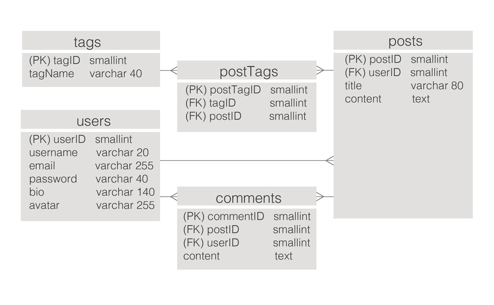The site uses a MySQL database. The site map is dynamic — on the finished site, logged in users see a different site map to unathorised visitors.
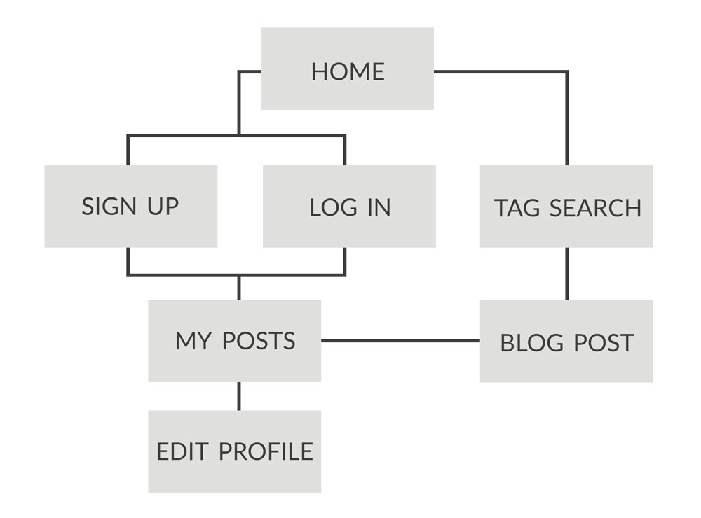DESKTOP VIEWS
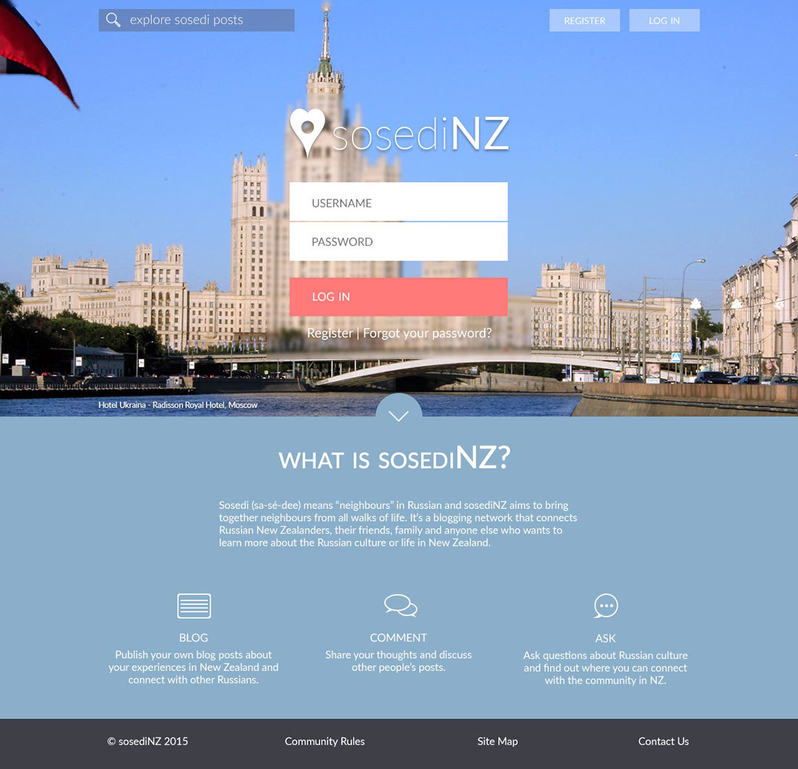The frosted glass effect on the portion of the background behind the log in form was a tricky and rewarding bit of CSS to write. Achieved through fixed positioning, blur filters and SVG, this effect if fully responsive and supported in a range of browsers.
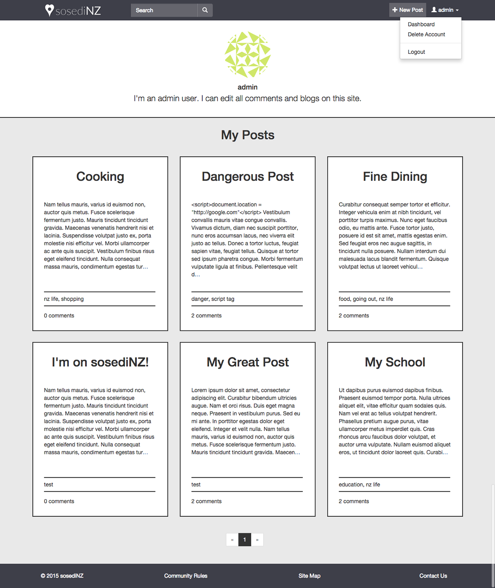A user's dashboard will display all of their posts, starting from the most recent, 6 at a time. The dashboard uses pagintation to allow users to look at their earlier posts without cluttering their feed. When toggled, the user dropdown menu will allow the user to go back to their dashboard from any part of the site, log out, or delete their account.
This view also demonstrates the site's use of html entities to convert dangerous characters into plain text.desktop-edit
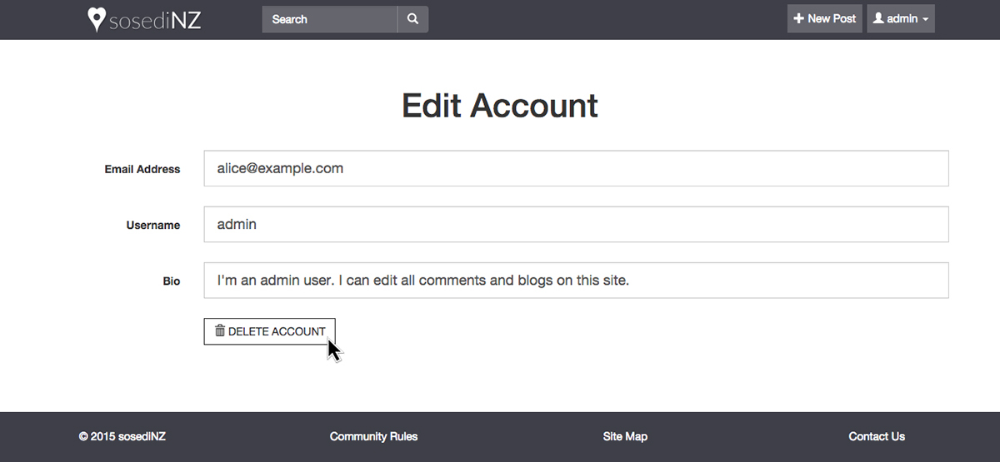An account delete form, showcasing the button hover effect. This effect is consistent across all buttons on sosediNZ.
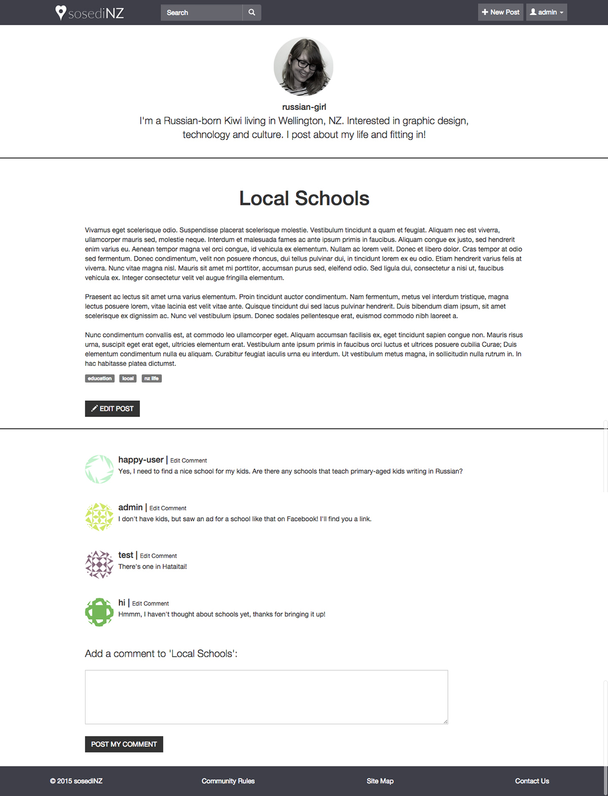An admin user has the ability to edit or delete any post or comment on the site, regardless of the author.
The app has Gravatar integration, meaning that users who have a Gravatar account will automatically have their Gravatar displayed next to their name. Users who do not have a Gravatar account and who did not upload an avatar when registering will have a randomly generated graphic displayed as their profile photo.
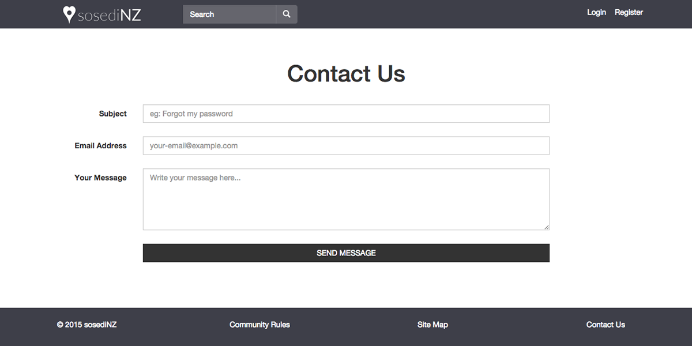The contact view uses Mailgun to send duplicates of the message to the user and notify the admin.
TABLET VIEWS
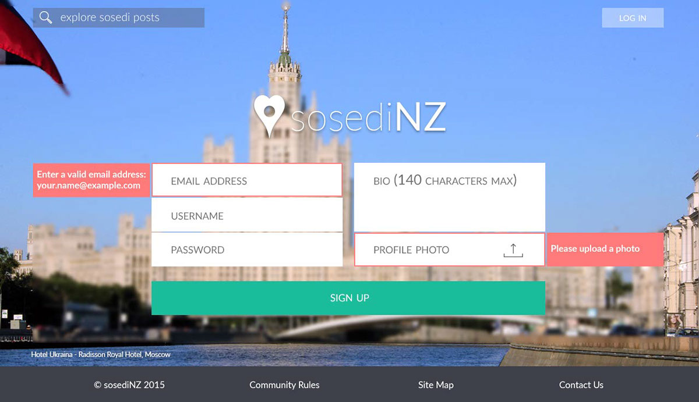 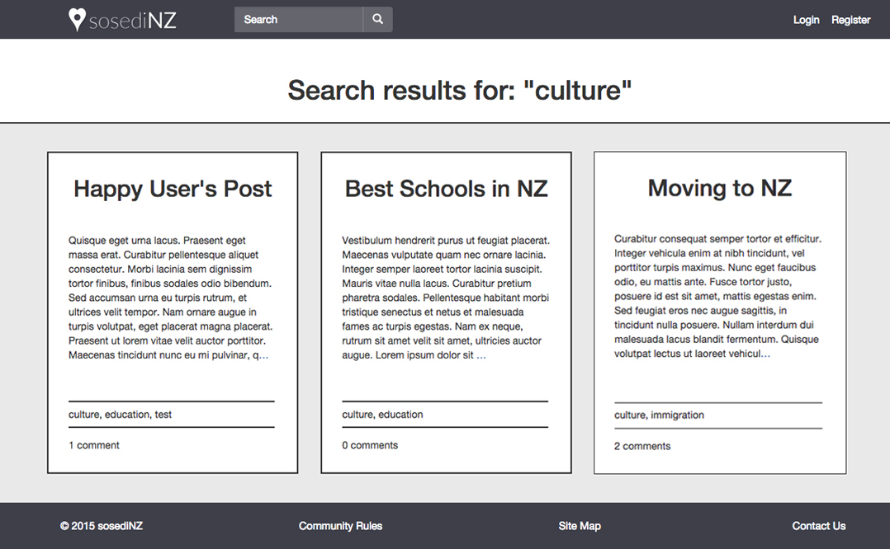The search results are generated by querying the title, content and tags associated with a post. Uses fulltext.
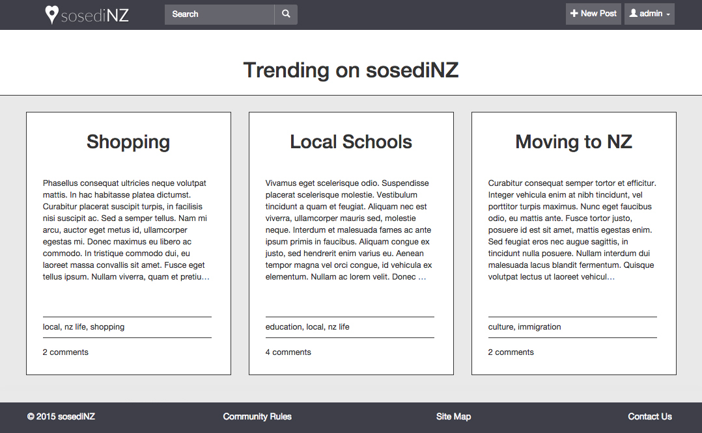The Trending Posts view displays most recent posts using an automatically generated timestamp. This view is where logged-in users are redirected when they click on the sosediNZ logo, go to the home page, or click the search button (magnifying glass) without specifying what they want to search for.
MOBILE VIEWS
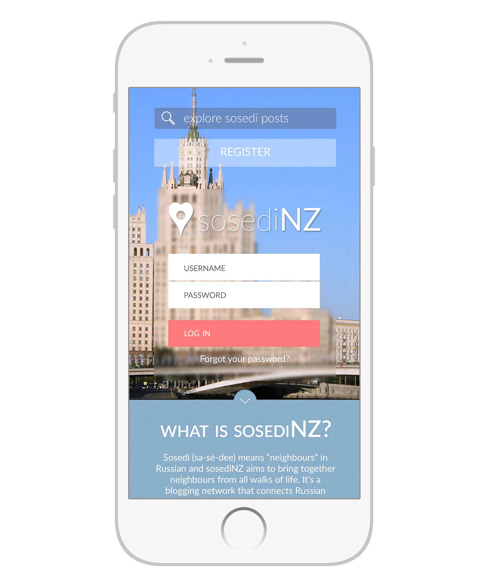 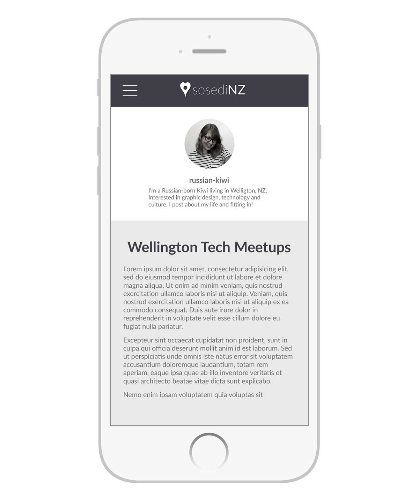Thanks for viewing!